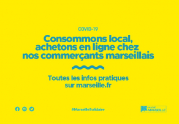

Lorem
Excogitatum est super his, ut homines quidam ignoti, vilitate ipsa parum cavendi ad colligendos rumores per Antiochiae latera cuncta destinarentur relaturi quae audirent. hi peragranter et dissimulanter honoratorum circulis adsistendo pervadendoque divites domus egentium habitu quicquid noscere poterant vel audire latenter intromissi per posticas in regiam nuntiabant, id observantes conspiratione concordi, ut fingerent quaedam et cognita duplicarent in peius, laudes vero supprimerent Caesaris, quas invitis conpluribus formido malorum inpendentium exprimebat.
Actualité
-
Education
À l'heure où les étudiants marseillais sont confrontés à de nouvelles mesures de confinement liées à l'urgence sanitaire en cours, la Ville de Marseille a voulu, avec ses partenaires associatifs, leur apporter sa solidarité alors même que beaucoup d'entre eux disposent de peu de moyens pour assurer leur quotidien. Parallèlement les services du CROUS se mobilisent également pour tenir compte de cette situation.
-
Economie
Consommons local ! Une plateforme Internet pour accompagner la numérisation des commerçants marseillais.
-
Culture

#Culturecheznous : la culture à portée de clics pendant le confinement !
-
Mairie

Des services en ligne pour faciliter vos démarches.